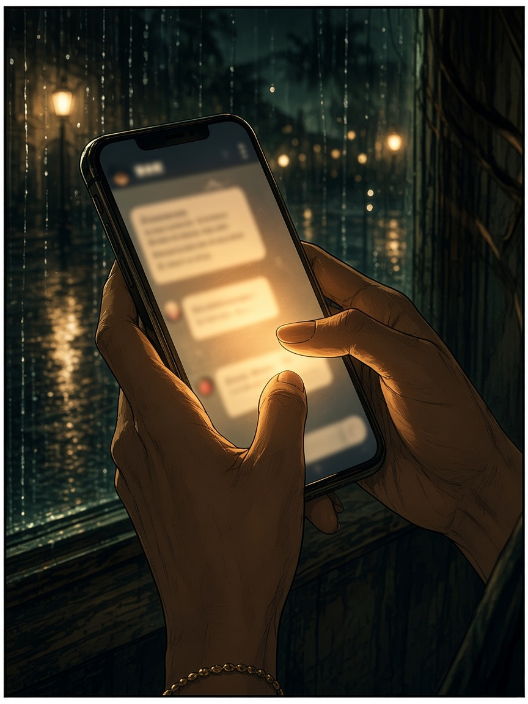
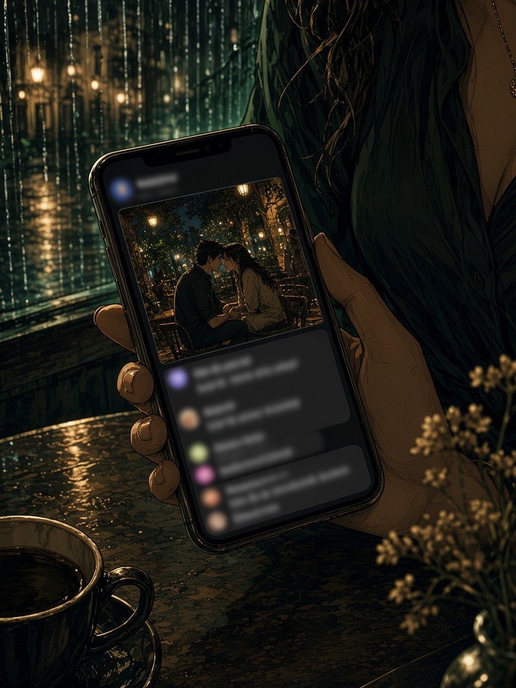

The Alibi.
Late again. She said she was still at work.

“Still at work. Late meeting. Don’t wait up.”
Something in her chest wouldn’t settle.
She opened Discretion. Checked the time.
Same hour. Different place.

19:42. The photo landed. The alibi didn’t.
The message said office. The clock said restaurant.
She didn’t need another excuse. She needed the truth.
Excuses are loud. Truth is quieter — and it stays.
When you’re ready for facts over stories — Discretion.